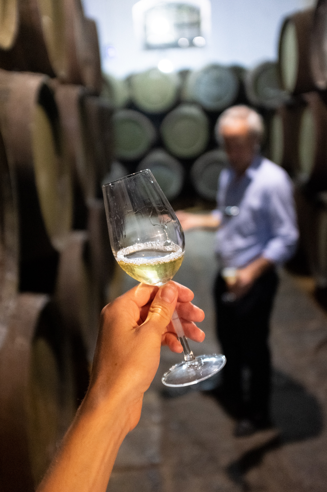

Excelencia en Vodka
BARRICAS DE JEREZ PARA VODKA
Finaliza tu vodka en barricas históricas de jerez — preservando la pureza mientras añades capas de carácter elegante y matizado.
Solicitar Presupuesto
Finaliza tu vodka en barricas históricas de jerez — preservando la pureza mientras añades capas de carácter elegante y matizado.
Solicitar PresupuestoA medida que los productores de vodka premium buscan diferenciación en un mercado cada vez más competitivo, las barricas de jerez ofrecen un enfoque sofisticado para crear expresiones envejecidas únicas que mantienen el carácter esencial del vodka mientras añaden complejidad de lujo.
La clave reside en el envejecimiento de intervención mínima - usando las características sutiles impartidas por diferentes estilos de jerez para realzar la pureza natural del vodka en lugar de enmascararla. Esto crea expresiones premium sofisticadas que atraen a conocedores que buscan experiencias elevadas de vodka.

Cada tipo de barrica de jerez ofrece oportunidades únicas para el realce del vodka, desde preservar la pureza esencial mientras añade refinamiento hasta crear expresiones envejecidas distintivas que redefinen las categorías de vodka premium.
Envejecida junto al mar, estas barricas añaden elegancia costera única mientras mantienen el carácter limpio del vodka. Crea expresiones sofisticadas con influencia marítima distintiva y suavidad realzada.
Envejecimiento de intervención mínima que preserva el carácter esencial del vodka mientras añade refinamiento suave. La influencia delicada del Fino crea vodka premium sofisticado con suavidad realzada y complejidad sutil.
El envejecimiento a corto plazo crea expresiones de vodka premium sofisticadas con suavidad notable. Añade suaves notas de nuez y textura realzada mientras preserva el carácter limpio esencial del vodka.
Para destiladores que buscan expresiones distintivas de vodka envejecido, las barricas Oloroso crean perfiles audaces y complejos. El cronometraje cuidadoso previene dominar mientras añade carácter rico y textura lujosa en boca.
El estilo de jerez más raro crea vodka extraordinario para posicionamiento ultra-lujo. Complejidad excepcional y elegancia hacen que estas expresiones sean altamente buscadas por coleccionistas y conocedores.
Crea expresiones únicas de vodka estilo postre con increíble riqueza y dulzor. Períodos cortos de acabado añaden carácter de lujo mientras mantienen la base limpia del vodka para posicionamiento premium innovador.
El arte del envejecimiento de vodka en barrica de jerez reside en la intervención mínima - usando cronometraje preciso y selección cuidadosa de barricas para realzar la pureza natural del vodka mientras añade características de lujo sofisticadas.
El monitoreo cuidadoso asegura que la influencia de la barrica de jerez realce en lugar de enmascarar el carácter limpio esencial del vodka, manteniendo la pureza que define el vodka premium mientras añade complejidad sofisticada.
El contacto a corto plazo con madera curada con jerez desarrolla mejoras sutiles de textura en boca y suavidad realzada, creando la textura lujosa que distingue las expresiones de vodka ultra-premium.
Los períodos óptimos de envejecimiento varían de días a meses dependiendo del tipo de barrica y perfil deseado. El cronometraje preciso previene sobre-extracción mientras logra el realce sutil que define el vodka envejecido exitoso.

Encuentra respuestas a las preguntas más comunes sobre nuestras barricas de jerez premium para realce de vodka.
Cuando se gestionan adecuadamente, las barricas de jerez realzan en lugar de comprometer el carácter esencial del vodka. La clave es el envejecimiento de intervención mínima con cronometraje preciso - típicamente días a semanas en lugar de meses o años. Las barricas Fino y Manzanilla son especialmente adecuadas para esta aplicación, añadiendo sofisticación y suavidad mientras preservan la base limpia del vodka. Nuestros expertos proporcionan protocolos específicos para lograr realce sin perder la pureza definitoria del vodka.
El envejecimiento de vodka requiere marcos de tiempo precisos y cortos para prevenir sobre-extracción. Las barricas Fino y Manzanilla típicamente funcionan bien durante 1-4 semanas para realce sutil. Amontillado puede requerir 1-2 semanas para mejora de suavidad. Las barricas Oloroso y PX necesitan monitoreo cuidadoso con períodos de envejecimiento de días a semanas dependiendo de la intensidad deseada. El objetivo es realce sutil en lugar de transformación dramática. Proporcionamos protocolos de cronometraje detallados basados en tu base de vodka y perfil objetivo.
Las regulaciones varían según la jurisdicción, pero muchos mercados permiten que el vodka mantenga su designación si el proceso de envejecimiento no altera fundamentalmente su carácter. En la UE y EE.UU., el vodka debe permanecer "neutral en olor y sabor" pero puede ser permisible el realce sutil. Algunos productores etiquetan expresiones envejecidas como "vodka envejecido" o crean sub-categorías premium. Recomendamos consultar tu organismo regulador local y podemos proporcionar documentación mostrando procesos de intervención mínima que preservan características del vodka.
El vodka envejecido en jerez funciona mejor en el segmento ultra-premium, posicionado como expresiones de lujo innovadoras para consumidores exigentes. Las estrategias clave de posicionamiento incluyen enfatizar artesanía, herencia española, envejecimiento de intervención mínima y suavidad realzada. Las ediciones limitadas y lanzamientos para coleccionistas funcionan particularmente bien. La rareza del proceso y la procedencia española auténtica crean historias de marca convincentes que justifican precios premium y atraen conocedores que buscan experiencias únicas de vodka.
¿Listo para elevar tu vodka? Conéctate con nosotros para recomendaciones personalizadas y soluciones de barricas de jerez.